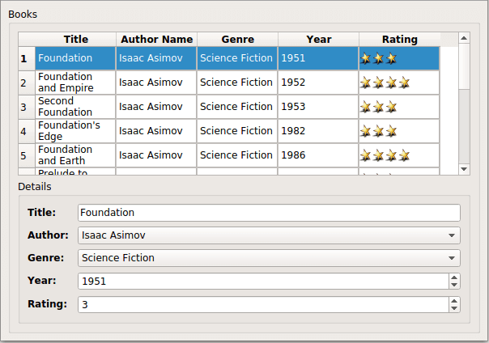

Books
Shows how to use Qt SQL classes with a model/view framework.
The Books example shows how Qt's SQL classes can be used with the model/view framework to create rich user interfaces for information stored in a database.

Information about a collection of books is held in a database. The books are catalogued by author, title, genre, and year of publication. Although each of these fields can be displayed and edited using standard widgets, an additional field describing an arbitrary rating for the book needs something extra.
Books are rated using a system where each is allocated a number of stars; the more a book has, the better it is supposed to be. By clicking on a cell containing the rating, the number of stars can be modified, and the rating in the database is updated.